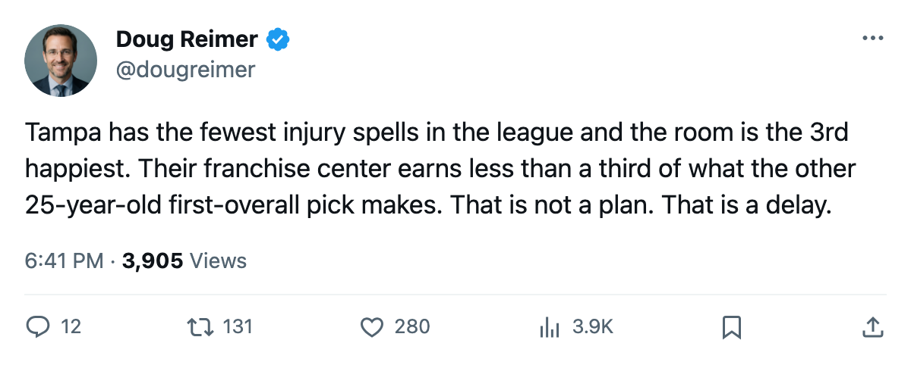
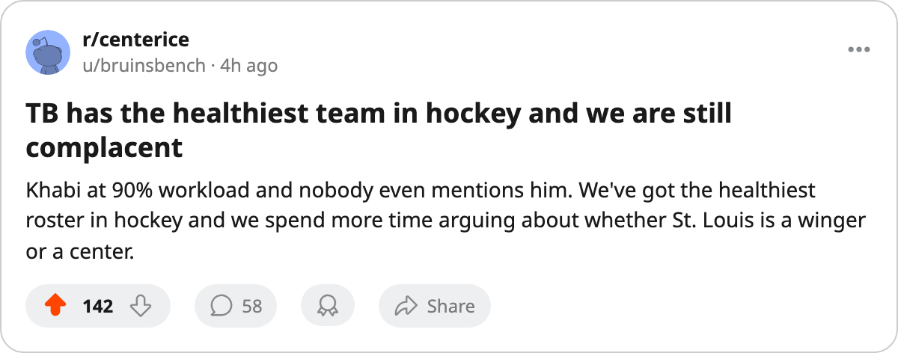

17 Spells, 98.3 Morale, $2.60M, 1 Year Left: Tampa Bay Runs the Tightest Room in Hockey Until Lecavalier Walks
The Lightning carry the fewest injury spells in hockey and the 3rd-highest club morale. The single number that breaks the ledger costs $2.60M and has one contract year remaining.
 Doug ReimerAnalytics editor, ex-video coach · The Slot Report
Doug ReimerAnalytics editor, ex-video coach · The Slot Report
 Tampa Bay Lightning has logged 17 injury spells through 39 games. No other club is below 20. The 2nd-lowest is
Tampa Bay Lightning has logged 17 injury spells through 39 games. No other club is below 20. The 2nd-lowest is  New Jersey Devils at 20, then
New Jersey Devils at 20, then  Dallas Stars at 23. In man-days surrendered, Tampa Bay ranks 2nd at 45, behind only
Dallas Stars at 23. In man-days surrendered, Tampa Bay ranks 2nd at 45, behind only  San Jose Sharks and their 28.
San Jose Sharks and their 28.
Rank every club on the league's own injury designations, club morale, cost per point, and attendance, then look for the team where all four columns point the same direction. Tampa Bay is the only one where they do.
| Club | Spells | Days lost | Morale | Cost/point | Attendance |
|---|---|---|---|---|---|
| Tampa Bay Lightning | 17 | 45 | 98.3 | $1.22M | 16877 |
| New Jersey Devils | 20 | 56 | 93.0 | $1.06M | 16930 |
| Dallas Stars | 23 | 64 | 95.6 | $1.00M | 16859 |
| San Jose Sharks | 24 | 28 | 88.3 | $2.07M | 13181 |
 New York Islanders New York Islanders | 34 | 348 | 93.4 | $1.27M | 13379 |
Tampa Bay sits 6th in the Eastern Conference with 49 points on a $59.79M payroll. That is $1.22M per point, 10th-best in the league. The Lightning draw 16877 per game, 2nd only to New Jersey Devils at 16930. Their room morale of 98.3 trails only  Vancouver Canucks (98.8) and
Vancouver Canucks (98.8) and  Colorado Avalanche (98.4).
Colorado Avalanche (98.4).
Every one of those numbers is accurate today. The one that isn't sustainable belongs to a 25-year-old center earning $2.60M with 1 contract year left.
The Lecavalier Contract
 Vincent Lecavalier89 has 23 goals and 24 assists in 39 games. A 99-point pace, 22.5 minutes a night, a Book grade of 86, and a Development Index reading of exactly zero. His morale is 100, his salary is $2.60M, and 1 year remains on his contract.
Vincent Lecavalier89 has 23 goals and 24 assists in 39 games. A 99-point pace, 22.5 minutes a night, a Book grade of 86, and a Development Index reading of exactly zero. His morale is 100, his salary is $2.60M, and 1 year remains on his contract.
He is the only Tampa Bay player in the Bureau's contract-year top 30 by overall. The next-best Lightning on an expiring deal is Brian Sutherby at 76 overall and $0.90M, followed by Alexander Svitov at 76 and $1.00M.
 David Legwand90 at
David Legwand90 at  Nashville Predators is the comparable. Legwand is 25, like Lecavalier. He scores 55 points in 38 games at a pace of 119, carries a Book grade of 89, and earns $8.37M on 1 year remaining. Lecavalier scores 8 fewer points, wears the same age, and costs a third of the money. The Bureau's Book puts a 3-point gap between them at 86 and 89.
Nashville Predators is the comparable. Legwand is 25, like Lecavalier. He scores 55 points in 38 games at a pace of 119, carries a Book grade of 89, and earns $8.37M on 1 year remaining. Lecavalier scores 8 fewer points, wears the same age, and costs a third of the money. The Bureau's Book puts a 3-point gap between them at 86 and 89.
Born in Ile-Bizard, Quebec, drafted first overall in 1998 by Tampa Bay, and playing his entire career in the same building. He won the MVP of the 2004 World Cup of Hockey for Canada. His base grade in the Book is 90; his potential is also 90, meaning the Bureau currently sees no headroom above what he already is. His weakest attributes are INJU at 50 and FIGH at 51, the two grades that make a front office nervous about a long-term commitment.
Khabibulin at 90%
 Nikolai Khabibulin92 has started 35 of Tampa Bay's 39 games. That is a 90% workload share, 2nd in the league behind only
Nikolai Khabibulin92 has started 35 of Tampa Bay's 39 games. That is a 90% workload share, 2nd in the league behind only  Johan Hedberg86 at
Johan Hedberg86 at  Pittsburgh Penguins and his 95% share. Khabibulin carries a Book grade of 89, with a speed grade of 89 and a passing grade of 71. His backup,
Pittsburgh Penguins and his 95% share. Khabibulin carries a Book grade of 89, with a speed grade of 89 and a passing grade of 71. His backup,  John Grahame82, has appeared in 5 games for a 13% share.
John Grahame82, has appeared in 5 games for a 13% share.
The Pittsburgh Hedberg pattern applies here with one difference: Pittsburgh's roster has 96% of its games covered by a single goaltender because the roster itself is too thin to spread work. Tampa Bay's thinness is nowhere near that level. They lean on Khabibulin at 90% because nobody else is hurt enough to demand spot starts. Seventeen spells across 45 lost days gives the coaching staff a full healthy roster 30-plus nights out of 39.
The risk is the same one Pittsburgh faces: a single goaltender at a 90% workload through 39 games is a body accumulating mileage on no rest. The Lightning's low injury count this season means he hasn't been forced to pitch through a thinning depth chart, which is the scenario that usually breaks a workload number.
What the Ledger Cannot Hold
The Lightning have committed $59.79M and cleared $16.91M in profit. They draw 16877 at a ticket price of $81. Their prestige sits at 1044, 4th in the league. The room is the 3rd-happiest in hockey.
None of that addresses the question the front office faces between now and July. A $2.60M center producing at a 99-point pace with 1 year left is, by the arithmetic on the sheet, the cheapest top-tier center in the league. If the INJU and FIGH grades worry them enough to structure a long-term deal with shorter terms or partial guarantees, they face a different problem: a man at 100 morale and zero movement on the Development Index has every reason to test the market against $8.37M offers.
The Lightning's efficiency depends on one player choosing to stay cheap. That's a negotiation.

